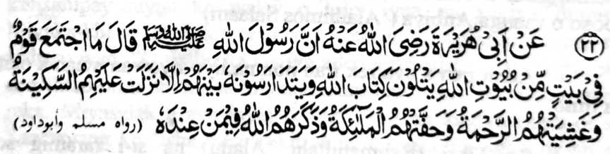
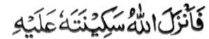
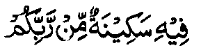
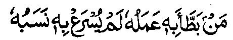
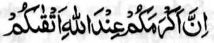

Miyakathitayan ko Abu Hurairah (Radhiallaho ‘Anho) a mata-an a so Rasulollah (Sallallaho ‘Alaihi wa Sallam) na pitharo iyan, “Da ko kathimo-timo o manga tao si-i ko walay a ped ko manga walay o Allah a pembatiya-an niran non so kitab o Allah ago gi-i ran ipamagenda-owa a ba di:
- tomoron kiran so Sakinah (kalilintad o mokarna)
- go mibongkos kiran so Rahmat
- go libeten siran o manga Mala-ikat
- go ipangandag siran o Allah ko [manga Mala-ikat a] lomilibeton.”
Giyangka-iya a Hadith na iniropa niyan so makalalawan a kalbihan o manga gi-i paganadan ko Agama ago so manga Madrasah. So kaparoliya ko apiya anda sangkanan a miya-aloy a manga balas na tanto a maporo [a daradat] sa apiya so tenday o kaoyag-oyag o tao na langon niyan non misanggar na daden malapis. Ogaid na si-i na madakel a manga balas, balabao ron angkoto a miya-ori ma-aloy. So ka-aloy si-i sa Hadapan o Allah ago so kiyatademi [reketa] o Pekhababaya-an ta na okor a daden a lawan niyan.
So kathoron o Sakinah na miya-aloy ko madakel a Hadith. So manga Ulama sa Hadith na inosay ran sa madakel a okit so titho a kapiya niyan. So kiyapaka mbaram-barang o osayan na kena ba miyakazosopaka ka khapakay a baden makapagayon-ayon.
Aya kiya-aloya on sa Qur’an na kati-i:

“...Na piyakatoron o Allah so Sakinah Niyan si-i rekaniyan [a Nabi]...” (Surah At-Taubah: 40)
“Sekaniyan [so Allah] a piyakataron Niyan so kathatakna ko manga poso o Miyamaratiyaya...” (Surah Al-Fath: 4)

“...katatago-an sa Sakinah a pho-on ko Kadenan niyo...” (Surah Al-Baqarah: 248)
Giyoto-i giyangka-iya mapiya a limo na inaloy ko madakel a Ayaat sa Qur’an, ago tanto a madakel a Hadith a kapapadaleman sa mapiya a tothol pantag si-i.
Miya-aloy ko [kitab a] Ihya a miyaka-isa na so Ibn-e-Thauban (Radhiallaho ‘Anho) na miyakiphasada ko isa ko manga tonganay niyan sa si-i kiran pethankas, ogaid na aya kinisampay niyan ko walay o lolot iyan na kagiya mapita. Miyaka-kheno so lolot iyan sangkoto a kiyatarasao niyan, na pitharo iyan, “O da bo ka kagiya aden a pasad ta na di aken reka den tharo-on o antona-ai miyakabalam-ban raken sa kazong aken reka.
Miyasalak a aya kiyapakanao aken na kagiya mara-ot so Sambayang ko ‘Isha. Miyapikir aken a imasaden ngko da-an so Sambayang aken a Witr (wajib a Sambayang a telo ka rak’at ko oriyan o ‘Isha) ka amay-amay na ba ako den miyatay sangkoto a gagawi-i a da ko kazambayangi, sabap sa da-a kasarigan pantag ko diyandi o kapatay. Soden so kiya Qonot aken [liyo-liyowan a pangeni ko soled o Sambayang a Witr], na miya-ilay aken so manga gadong a sapadan ko Sorga, a langon non mapapadalem so pimbarang a obarobar. Miyabira-i ako ron baden taman ko kiya-sobo niyan.”
Phipira gatos a lagida-i a miyanggola-ola si-i ko kiyapaginetao o manga barasimba a manga lokes tano. Giyangkanan a manga nganin, na aya bo a kapekhasagadi ron na amay ka mabelag so tao sa tarotop ko langon a nganin a salakao ko Allah, go so tarotop a inengka si-i Rekaniyan.
Sakamaoto mambo a madakel a Hadith a inaloy ran so miyanggola-ola a kaphelibet o manga Mala-ikat.
Si-i ko [manga kitab a] Muslim Sharif, na giyangka-iya a Hadith na masagogod a kiya-aloya-on. Aya kiyaposan non na:

Sa tao a ma-awat sekaniyan o ‘amal iyan [a marata ko limo o Allah] na di sekaniyanon maphakarani [pharoman] o bangensa niyan.
Giyoto-i sabap a so tao a maporo-i bangensa, ogaid na gi-i nggalebek sa sopak ago dosa, na di niyan den matimbang sa Pangilalayan o Allah so tao a Muslim a mababa-i bangensa ago manga-ngalimbaba-an, ogaid na ma-aleken ko Allah ago barasimba.

“...Mata-an! A aya pemamasela-an rekano si-i ko Allah na so mala rekano-i kalek paratiyaya [ko Allah].” (Surah Al-Hujurat: 13)